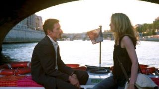

En Antes del atardecer (2004) el director y guionista ofrece la mejor y más acabada visión de la relación de pareja de la trilogía, tanto en su aspecto argumental, anecdótico, como en la propia reflexión discursiva que el guión exhibe sobre la historia de sus protagonistas y su configuración.
Dos clásicos indiscutibles, dos obras maestras sostienen la historia de Jesse y Celine: por un lado, el inicio de la película se nutre de la decepción que ambos protagonistas han arrastrado durante nueve años por no haber acudido a la cita en Viena, seis meses después de su explosivo primer encuentro, en un guiño a Tú y yo, de Leo McCarey, en sus versiones de 1939 y de 1957. El calibre de su casual enamoramiento es digno del estallido sexual de los protagonistas de La guerra de los Rose (1989, Danny DeVito), pero Linklater apuesta por convertir la casualidad en causalidad mediante la inoculación del amor: tal grado de adecuación, de compenetración, de identidad compartida no se puede perder, no se puede volatilizar.
Los protagonistas —Jesse y Celine— se emplazan dentro de seis meses para certificar y consolidar el milagro que les ha sobrevenido y al que no están dispuestos a renunciar. Obviamente, el azar (ahora en su contra) les jugará una mala pasada. Celine no acudirá por la defunción de su abuela. Jesse, sí. Y la esperará y le dejará pistas para que se reencuentren y se desesperará y se defraudará. Y un dolor interior, disfrazado de indiferencia, maquillado de cotidiana normalidad, los irá royendo por los recovecos de sus corazones, impidiendo que puedan amar y ser amados por otras personas, que puedan alcanzar la felicidad de nuevo, pues el espectro de la dicha compartida en un parque de Viena se ha adueñado de su ser y sólo desaparecerá cuando se vuelva a materializar, cuando se reencuentren y sean capaces de decirse, a pesar del pudor, del miedo a ser heridos, de lo vulnerable de las emociones, que se quieren y se aman y no se han olvidado y que la vida no es nada sin el uno ni la otra. Y se lo dirán con medias palabras, con miradas, con gestos.
Al fondo de la película, se erige otro gran clásico: Desayuno con diamantes (1961), de Blake Edwards, tanto con la presencia del gato de Celine, bautizado como Che, el cual da la bienvenida a la pareja al llegar al patio interior donde se ubica el apartamento de Celine, mientras ambos personajes apuran en un suspense emocional los últimos minutos antes de la partida de Jesse, que debe tomar el vuelo de regreso a New York; así como con la interpretación, acompañada de una guitarra, de una canción, un vals, que Celine ha compuesto por y para Jesse, momento en el cual percibimos que los protagonistas, ahora sí, sellarán su alianza después de su odisea de nueve años de separación. La vida les ha otorgado una segunda oportunidad y ahora están preparados para aprovecharla y no dejarla escapar.
La película sería una comedia dramática-romántica más por la anécdota argumental, bien trabada y diseñada, pero será la reflexión discursiva sobre el concepto tiempo y su plasmación fílmica lo que la realza y la eleva entre sus iguales. Linklater lleva a cabo un agudo trabajo sobre la relación entre la historia y el discurso a través del juego con la categoría temporal. El director no sólo quiere decirnos la infalibilidad del amor, su fugacidad, su extrema vulnerabilidad y fragilidad, sino mostrárnoslo. En cierto modo, se trata de ofrecernos un fragmento de vida, de retratar algo que no se detiene pero que al mismo tiempo no se percibe en su fluir temporal.
Si fue Lope de Vega el primero que se atrevió en su Arte nuevo de hacer comedias a cuestionar la consagrada poética aristotélica de las tres unidades, permitiendo una mayor fluidez dramática al despojarse de un corsé preceptivo que asfixiaba el desarrollo artístico, andando el tiempo el siglo XX recuperará cierto aristotelismo para precisamente regresar a cierto realismo del estagirita a fin de remozar los mecanismos de representación artística. La condensación argumentativa, temporal y espacial será exhibida por los novelistas más vanguardistas, convirtiéndose el Ulises (1922) de James Joyce en el epítome de esta nueva forma de narrar. Precisamente, Linklater reúne a sus dos protagonistas en la librería Shakespeare and Cia, en París. Allí Jesse acaba de presentar su novela significativamente titulada This time, en la que detrás de un ropaje más o menos autobiográfico (así se lo confiesa a la periodista cuando lo interroga) cuenta su aventura amorosa en Viena nueve años atrás. Una novela que tardó cuatro años en escribir y cuyo argumento transcurre en una sola noche.
Del mismo modo, el director pretende llevar a cabo un relato (fingidamente) isocrónico, en el que el tiempo interno de la historia se acomode al tiempo de la narración; en el que el orden cronológico de los acontecimientos se equipare a su narración. No estamos ante el experimento hitchcockiano de La soga, ni mucho menos ante el alarde de El arca rusa (2002), de Sokurov (un plano secuencia dentro del museo del Hermitage para ofrecernos la historia de Rusia en los dos últimos siglos), sino ante un remedo de tiempo real, de tiempo fiel.
Linklater persigue suturar el paso del tiempo cronológico mediante los mecanismos de representación cinematográficos: quiere retratar, fotografiar, detener el paso del tiempo imitando la fluidez de ese paso del tiempo, ese continuum imperceptible al que llamamos vida. Para ello articula su película sobre una pretendida diégesis pura, cuyo orden sólo se ve trastocado por la alteración de una serie de breve saltos temporales retrospectivos al encuentro de Viena, incardinados en el relato que está haciendo a los periodistas sobre el argumento de su novela, indicio para el espectador del carácter biográfico de la misma; mientras que la velocidad del relato responde a la mímesis aristotélica, a la escena, que es el intento más aproximado de imitación, en el discurso, de la duración de la historia.
De ahí la importancia de la reproducción del discurso de los personajes, de ese diálogo constante que se establece entre Jesse y Celine una vez se han reencontrado. De ahí esa prevalencia del showing frente al telling. Mediante esa conversación, ese diálogo incesante, se nos caracterizará a los personajes y se nos informará de cuál ha sido el derrotero de sus vidas durante estos nueve años de ausencia.